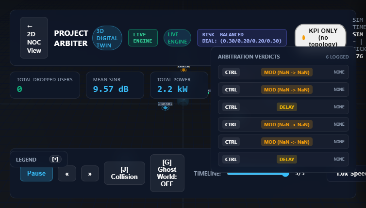
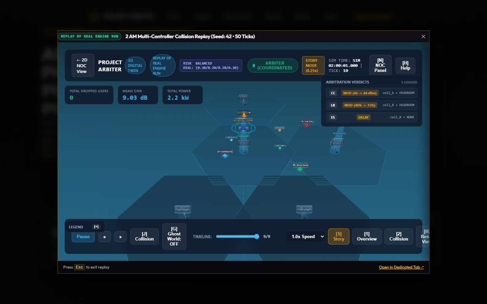

NOC Dashboard (2D)
WEB CONSOLETabular NOC operations console displaying active cell states, per-sector PRB capacity meters, SINR distribution histograms, and live referee decision logs with filterable reason codes.
Launch the Project ARBITER operations consoles. Inspect real-time 3D radio frequency propagation, antenna down-tilt actuation, active user SINR distributions, and referee verdicts, or monitor cellular Key Performance Indicators in the 2D NOC console.

Tabular NOC operations console displaying active cell states, per-sector PRB capacity meters, SINR distribution histograms, and live referee decision logs with filterable reason codes.

GPU-accelerated Three.js visualizer rendering 350+ mobile terminals with sub-second Lerp interpolation, dynamic antenna down-tilt radiation lobes, and Ghost World counterfactual overlay.
When interacting with the 3D twin, use these keyboard hotkeys to scrub timelines, jump to collisions, and inspect counterfactual branches: